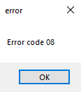

Our error codes usually look like this:

Usually you can fix most of those errors by trying again, restarting app or checking your internet connection.
You can find more details about each error you might come across below.
Troubles while trying to save image to tmp or local directory.
Make sure you have write permissions to the directory.
Make sure you are not removing folder while trying to take screenshot.
Application was unable to convert image to base64 format.
Try to take another screenshot if this problem wont go away make sure to contact us.
Unable to save settings directory is missing.
Make sure you are not removing directory or settings file while trying to save it.
Application cannot write settings to this location on disk.
Please make sure you have permissions to write to this directory:
C:\Users\"your pc username"\Documents\Cwute\user.cfg
Unable to save settings directory is missing.
Make sure you are not removing directory or settings file while trying to save it.
Something happened while trying to serialize file.
Make sure u are not trying to do anything with files.
Try restarting the application.
If this problem wont go away make sure to contact us.
Our infrastructure might be down.
Try again later.
Application was unable to retrieve data correctly from server.
Check your internet connection and try again later.(if this problem wont go away its probably our infrastructure)